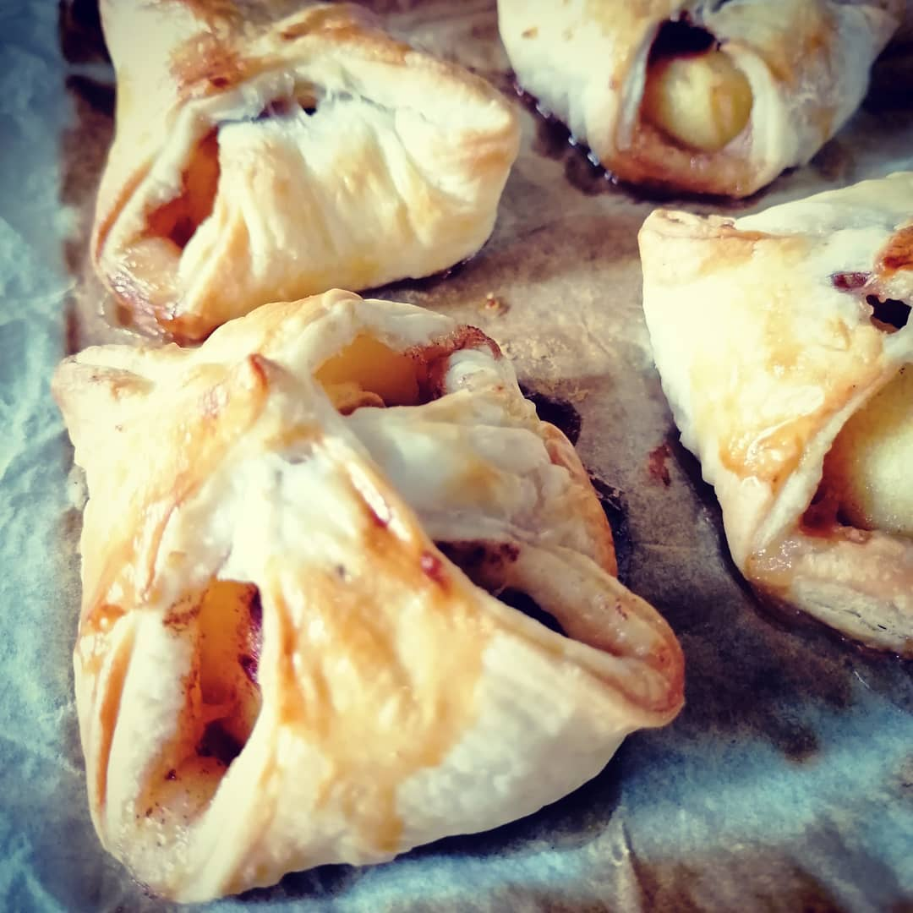

#jablkavzupane 🍎🍏🍎🍏🍎🍏🍎🍏
Klasika, ktorá nesmie v jeseni chýbať medzi koláčikmi😋 Máte ich radi?
#food #kolace #tasty #instafood #puffpastry #listkovecesto #cinamon #brownsugar #madagascarvanilla #vanilla #yum #chutne #dobroty #jesennepecenie #butter #maslo #mnamky #sladke #ovocie #fruit #baking #bakesomeonehappy #bakeisfun #kosice #pecenie